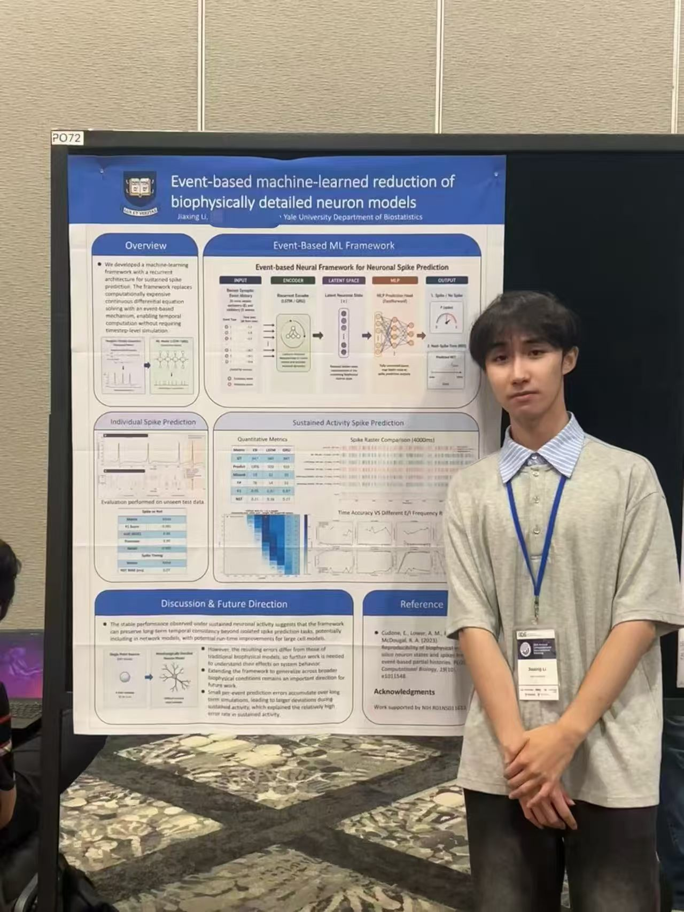

Jiaxing Li
Computational neuroscience ⎟ Neural dynamics ⎟ NeuroAI ⎟ Machine learning
I am a postgraduate associate at Yale University working at the intersection of computational neuroscience, neural dynamics, and machine learning. My current work focuses on event-driven machine-learning reductions of biophysically detailed neuron models in the NEURON simulator, with the goal of making multiscale neural simulation faster while preserving biologically meaningful dynamics.
Previously, I worked on brain-wide neuronal activity mapping at Yale's Laboratory of Physiology of Behavior and studied longitudinal cognitive-assessment biomarkers in Prof. Maurice Smith's Neuromotor Control Lab at Harvard University. My undergraduate training in biomedical engineering at Shanghai Jiao Tong University also included EEG hyperscanning, medical imaging, MRI safety, and physiological modeling.
News
| Nov 2026 | 🧠 Presenting a poster at the Society for Neuroscience (SfN 2026) in Washington, DC. |
| Jul 2026 | 🎤 Presented a poster at CNS 2026 in Halifax, Nova Scotia: “Event-based machine-learned reduction of biophysically detailed neuron models”. |
| Mar 2026 | ✈️ Started as a Postgraduate Associate in Prof. Robert McDougal's lab at Yale. |
| Oct 2025 | 🔬 Joined Prof. Marcelo Dietrich's Laboratory of Physiology of Behavior at Yale. |
Contact
Get in touch about collaborations, opportunities, or just to talk science.
jiaxing.li@yale.edu
Yale University · New Haven, Connecticut, US
Research
Projects, in reverse chronological order
McDougal Lab, Yale University
03/2026 — 09/2027 · Postgraduate Associate to Prof. Robert McDougal
Machine learning reduction of biophysical models for multiscale stimulation analysis
- Developed an event-driven ML surrogate for biophysical neuron models in NEURON to predict next-spike timing.
- Built recurrent encoders that map recent excitatory and inhibitory events into compact latent representations of neuronal dynamics.
- Achieved F1/AUC of 0.98 and 0.07-ms next-spike-time MAE while preserving long-horizon spiking dynamics.
- Integrated the surrogate with NEURON for scalable simulation across heterogeneous neuron models.
Dietrich Laboratory of Physiology of Behavior, Yale University
10/2025 — 03/2026 · Postgraduate Associate to Prof. Marcelo Dietrich
A deep learning pipeline for 3D brain-wide mapping of local neuronal ensembles in LSFM datasets
- Developed a deep-learning pipeline for 3D brain-wide neuronal activity mapping from light-sheet fluorescence microscopy data.
- Analyzed developmental neural activity patterns to study circuit mechanisms of social behavior.
Neuromotor Control Lab, Harvard University
07/2024 — 11/2024 · Visiting Student to Prof. Maurice Smith
Performance of MMSE and MoCA under repeated administrations
- Analyzed longitudinal NACC data to assess MMSE/MoCA diagnostic accuracy across 8 annual administrations.
- Evaluated CN–MCI and CN–dementia classification using ROC-AUC, Youden index, sensitivity/specificity, and bootstrapping analysis.
- Demonstrated stable diagnostic performance over 8 years, with AUC decline significantly below 1% per year.
Neuroengineering Laboratory, Shanghai Jiao Tong University
05/2024 — 06/2025 · Research Assistant to Prof. Shanbao Tong
Dual-brain synchronization mechanism of joint attention in natural behavior
- Utilized EEG hyperscanning with controlled variables to simulate real-life parent–child interaction.
- Designed network thresholds and used phase-locking values to construct within-frequency dual-brain networks.
- Demonstrated the prefrontal cortex's key role in joint-attention engagement with enhanced network connectivity.
Neural Information Processing Laboratory, Shanghai Jiao Tong University
05/2023 — 05/2024 · Research Assistant to Prof. Puming Zhang
Temperature rise mechanism of medical devices induced by gradient magnetic fields
- Developed an eddy-current and lumped thermal model to characterize MRI gradient-field-induced heating in active implantable medical devices.
- Evaluated the effects of gel thickness, initial temperature, and magnetic-field waveform on implant temperature rise.
- Identified stronger heating under sinusoidal than triangular gradient waveforms and localized peak heating near the device battery.
Lumped Parameter Model of Human Whole-Body Circulatory Loop
- Developed a closed-loop lumped-parameter model of systemic and pulmonary circulation using electrical analogs of cardiovascular dynamics.
- Implemented and solved ODEs in Simulink to reproduce physiological pressure and flow dynamics.
- Simulated normal, heart-failure, and cardiogenic-shock states and modeled aortic stenosis and mitral regurgitation.
 Shanghai Institute of Medical Device Testing
Shanghai Institute of Medical Device Testing
05/2023 — 05/2024 · Research Assistant to Dr. Xun Liu
Unsupervised Segmentation Algorithms for Human Brain Stroke Lesions
- Leveraged f-AnoGAN and GMVAE models to segment stroke lesions from MRI images.
- Optimized model parameters to achieve an SSIM of 0.816 for normal-tissue reconstruction.
- Improved segmentation performance over baseline with a 20% enhancement in SSIM.
CV
Download the full PDF
Education & positions
03/2026 — 09/2027
Yale University
Postgraduate Associate, McDougal Lab · New Haven, CT, US
10/2025 — 03/2026
Yale University
Postgraduate Associate, Laboratory of Physiology of Behavior · New Haven, CT, US
07/2024 — 11/2024
Harvard University
Visiting Student, Neuromotor Control Lab · Cambridge, MA, US
09/2021 — 06/2025
Shanghai Jiao Tong University
B.S. in Biomedical Engineering · Shanghai, China
Conferences
35th Annual Computational Neuroscience Meeting (CNS 2026)
Poster · Halifax, Nova Scotia, Canada · July 2026
“Event-based machine-learned reduction of biophysically detailed neuron models”

Society for Neuroscience (SfN 2026)
Poster · Washington, DC · November 2026
“Machine learning reduction of biophysical models for multi-scale stimulation analysis”
Honors & awards
| 2024.11 | Undergraduate Overseas Training Scholarship, Shanghai Jiao Tong University (Top 1%) |
| 2024.09 | Undergraduate Merit Scholarship, Shanghai Jiao Tong University (2023 Annual) |
| 2024.06 | Second Place, Guangdong Province Biomedical Engineering Design Competition |
| 2023.09 | Undergraduate Merit Scholarship, Shanghai Jiao Tong University (2022 Annual) |
| 2022.09 | Undergraduate Merit Scholarship, Shanghai Jiao Tong University (2021 Annual) |
Skills
SoftwareMATLAB, Simulink, R, LabVIEW, Multisim
ProgrammingPython, C++, C, Linux
Experimental / imagingPerfusion, immunohistochemistry, stereotaxic surgery, confocal microscopy, genotyping, light-sheet fluorescence microscopy, two-photon fluorescence microscopy
LanguagesEnglish (IELTS 7.5), Chinese (native)
InterestsNeuroAI, computational neuroscience, neural dynamics, machine learning, neurological disease, cognitive neuroscience